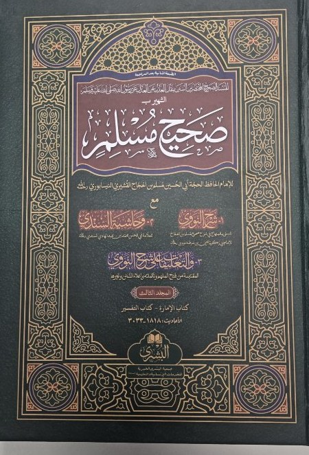

FeaturedHadithṢaḥīḥ al-BukhārīBrown coverYear VIIThe most authentic book after the Book of Allah: Imam al-Bukhari's collection of sound hadith, studied in full in the final year.$60.00 HadithṢaḥīḥ MuslimGreen coverYear VII$50.00
HadithṢaḥīḥ MuslimGreen coverYear VII$50.00 HadithSunan Ibn MājaBlue coverYear VII$35.00
HadithSunan Ibn MājaBlue coverYear VII$35.00 HadithSunan al-NasāʾīYear VII$40.00
HadithSunan al-NasāʾīYear VII$40.00 UrduAchchhī BāteṉYear I$6.00
UrduAchchhī BāteṉYear I$6.00
The Bookstore
67 books
Visit the Bookstore
HadithSunan Abī DāwūdGrey coverYear VII$40.00HadithSunan Ibn MājaBlue coverYear VII$35.00HadithSunan al-NasāʾīYear VII$40.00UrduAchchhī BāteṉYear I$6.00